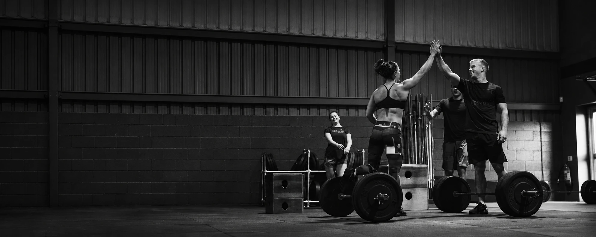
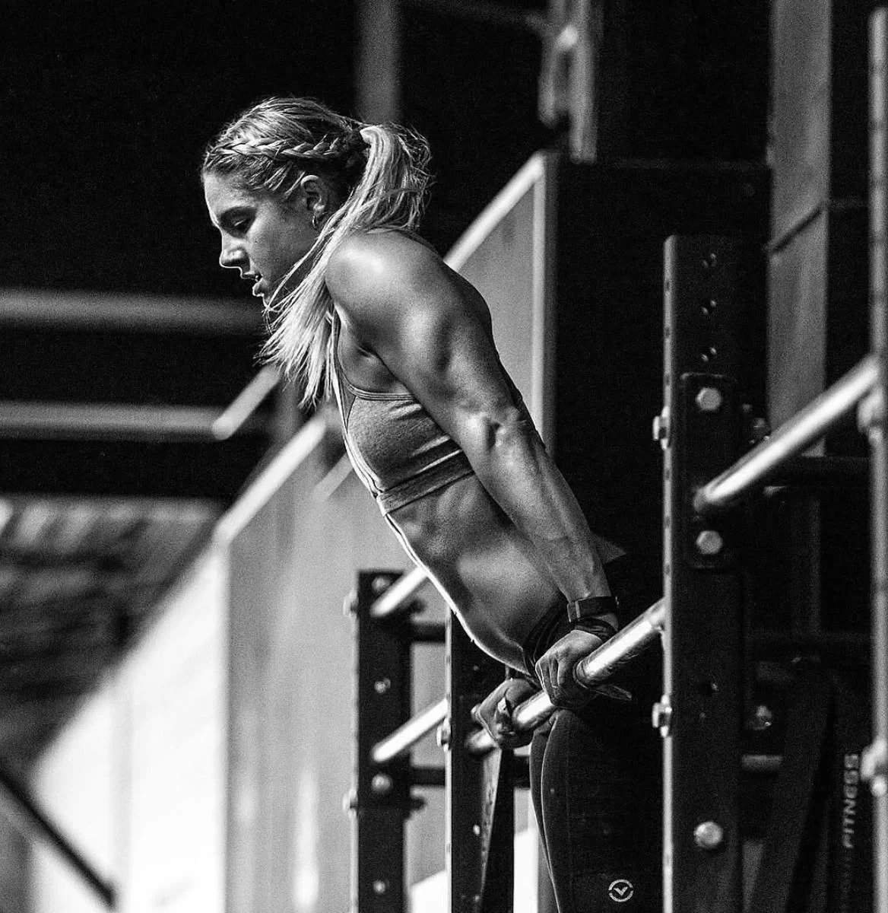
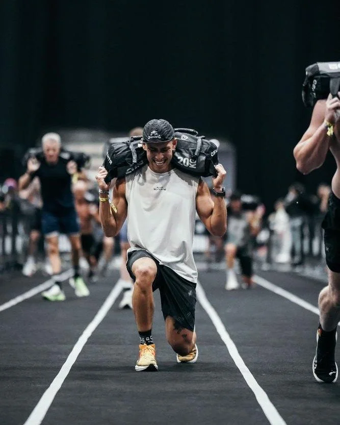

IRON
YARD
Le club
Une salle à toi.
Un groupe avec toi.
Iron Yard réunit 20 clubs de functional fitness en France, avec des cours coachés par groupes de douze et des cycles de préparation à huit. De la découverte au niveau confirmé, choisis une pratique qui colle à ton rythme et à ton objectif.

Préparation compétition
Ce que tu répètes à la box, tu le retrouves le jour J.
Un test de départ, des blocs de travail et une simulation. Choisis ton cycle selon l’épreuve, ton niveau et le temps que tu peux consacrer à la préparation.
Comparer les cycles
Première visite
Avant de pousser la porte.
Tu peux commencer par une visite et un cours à 25 €. Ton coach te fait découvrir la salle, prend quelques minutes pour comprendre ta pratique et adapte les exercices de la séance.
Voir la FAQ →